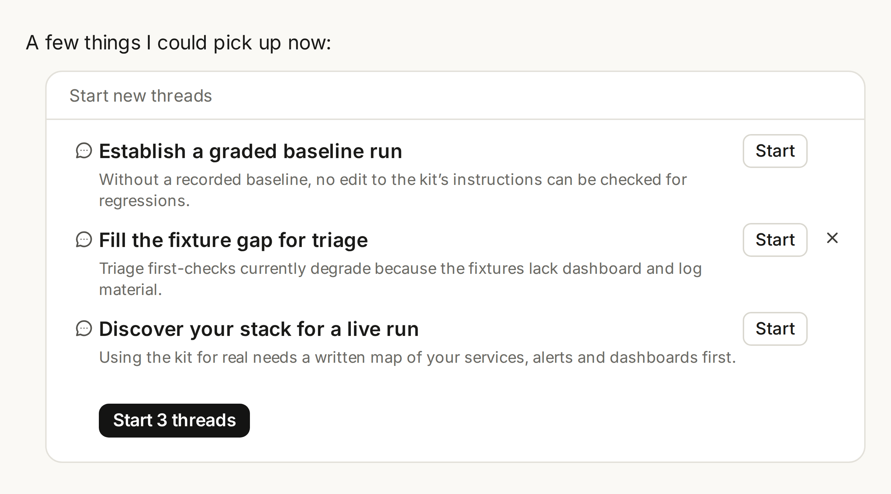

Managing multiple sessions across a build used to require you to divide the work, juggle handoffs, and stitch the results back together. Now in a Claude Code project, you describe what needs to get done and Claude manages the work.
Claude scopes the request, delegates the work, coordinates parallel threads, reviews the outputs, and assembles the finished result. You can steer progress throughout, even from your phone, and it keeps working after you step away from your computer.
For example, configure a project and set a goal to reduce your app's checkout p75 latency. Then ask Claude to profile each endpoint, test optimizations, and open PRs in parallel threads. Or connect your API, web, and mobile repos and set a goal to retire a deprecated v1 endpoint. Claude creates a thread per repo to migrate the callers, run the tests, open PRs, and then tells you which ones need to merge first.
Starting today, updated projects are available in beta to select Claude Pro and Max subscribers who use cloud sessions in Claude Code and don’t have any existing projects on the web or desktop.
Over the coming week, we'll expand access to more Claude Code users on those plans. Updated projects across all of Claude and Team and Enterprise plans come after that. If you're on Pro or Max and don't have access yet, you can join the waitlist.
Existing projects on Pro and Max plans keep working as they do today. We'll upgrade them as the rollout expands to chat and Cowork.
Threads do the work, Claude directs it
Projects have threads that do the work and a coordinator that directs them.
When you start a project, you select a goal as well as the repo or context. Claude starts by suggesting work it can pick up right away. You can configure the project’s cloud environment, connectors, plugins, instructions, and model.

You can monitor and guide progress in the main project chat, or dive into each individual thread to examine and steer the details. Brief Claude in the project the way you'd brief a chief of staff and it routes work to new or pre-existing threads.
Claude also checks in and follows through on work. With repositories connected, a thread opens pull requests and runs your tests; with documents, it reads them and drafts.
Under the hood, each thread is a Claude Code cloud session working on its own branch and copy of the repo. The coordinator keeps work organized, but if any threads work on the same code, the overlap is resolved as a merge conflict just like any other PR.
Each thread can further split its delegated work into pieces using subagents, loops, and workflows when needed so large assignments finish faster.
Context builds over time
Projects are designed for long-running or agentic workflows: work that takes longer than one reply and has more than one part.
Over time, Claude learns more about the project details and applies them to its work. Every thread now adds to and draws from a shared memory, reducing the need for complex prompt engineering.
For example, Claude can remember the release moved to Friday, why the export was dropped, or who to check in with before touching the billing service.
Claude also remembers your working and communication style. You can ask it to adjust how often it checks in, how frequently it starts new threads, or how detailed to make each update.
Alongside memory, projects now include a library that collects the files you add and the artifacts produced by Claude. This makes it easier to find relevant materials and for new work to build on past efforts.
What's next
Projects can run several threads at once, and each one is a full Claude Code session. Because of this, projects can reach usage limits faster. You can check project specific usage and select the model and effort levels used by the coordinator chat as well as the worker threads.
Threads run in the cloud today; running on your machine alongside your local tools and code and behind your network is coming very soon.
Start using projects.